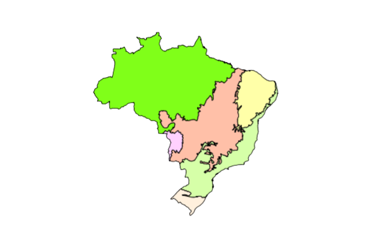

Introdução Sobre Biomas
O Brasil é um país conhecido por sua rica e diversificada beleza natural. O país abriga alguns dos maiores e mais importantes biomas do mundo, que são sistemas ecológicos únicos que sustentam uma ampla gama de vida vegetal e animal. Esses biomas são fundamentais para manter a saúde e a estabilidade do ecossistema do planeta e também fornecem recursos e benefícios importantes para os seres humanos.
'
Os grandes biomas brasileiros incluem a Floresta Amazônica, a Mata Atlântica, o Cerrado, a Caatinga, o Pantanal e o Pampa. Cada um desses biomas tem suas próprias características e características distintas, e todos abrigam uma grande variedade de espécies de plantas e animais que não são encontradas em nenhum outro lugar do mundo.
"O bioma pode ser definido, segundo o IBGE, como “um conjunto de vida vegetal e animal, constituído pelo agrupamento de tipos de vegetação contíguos e que podem ser identificados a nível regional, com condições de geologia e clima semelhantes e que, historicamente, sofreram os mesmos processos de formação da paisagem, resultando em uma diversidade de flora e fauna própria.” Esse termo provém do grego Bio = vida e Oma = grupo ou massa e foi utilizado pela primeira vez, segundo alguns autores, por Shelford. Para outros, o termo foi criado por Clements.
→ Importância da preservação
Existem diferentes biomas no Brasil e no mundo, cada um com suas espécies características e algumas vezes únicas. Por ser uma região natural que engloba toda a biodiversidade de uma área, além de fornecerem recursos para a população da região, os biomas devem ser protegidos e usados de maneira adequada.
O que se percebe, no entanto, é um crescimento descontrolado das grandes cidades, desmatamento, avanço de propriedades agrícolas e rurais nas áreas selvagens, além do uso indiscriminado dos recursos naturais dos biomas. Apesar de o desenvolvimento ser necessário, é importante desenvolver maneiras para que ele ocorra de maneira sustentável. Para que a preservação aconteça, alguns locais são protegidos por lei e constituem as Unidades de Conservação."
Biomas
Amazônia
Pantanal
Cerrado
Mata Atlântica
Caatinga
Pampa